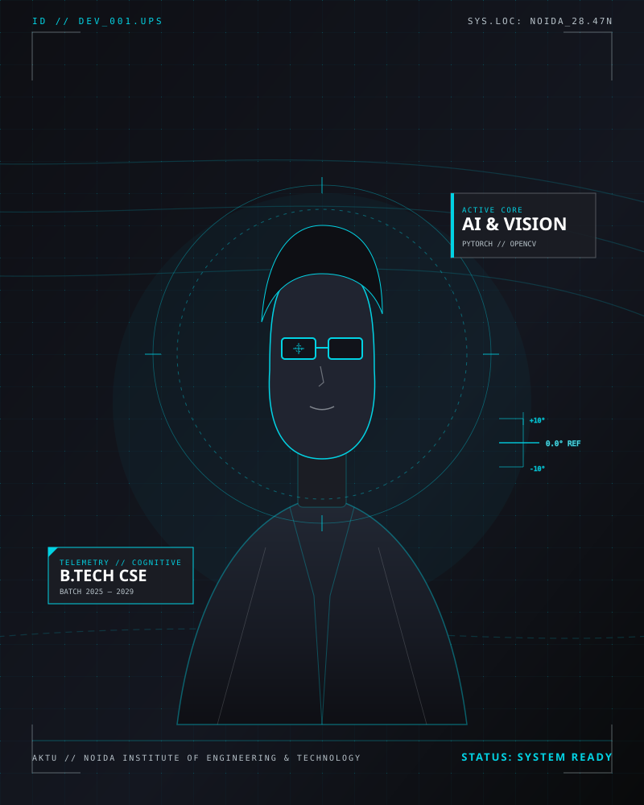

UDIT PRATAP SINGH
Computer Science Engineering student at NIET (AKTU), focused on building reliable software systems, exploring deep learning architectures, and engineering high-precision digital experiences. Driven by algorithmic curiosity and production-grade craftsmanship.

THE ENGINEERING PROFILE.
A verified audit of technical competencies, separating established hands-on skills from tools in active academic pursuit. No fabricated percentages—only calibrated engineering capabilities.
FROM LEARNING TO BUILDING.
The academic trajectory, hands-on development milestones, and collaborative technology initiatives shaping my path in computer science and artificial intelligence.
B.TECH IN COMPUTER SCIENCE & ENGINEERING
Engaged in rigorous undergraduate study covering Data Structures & Algorithms, Computer Architecture, Object-Oriented Programming, and discrete mathematical foundations. Current evaluated academic score: 8.20 CGPA across foundational coursework.
INNOVATION INTERACTION // EKUME CLUB, NIET
Participated in student-led innovation sessions, collaborative problem-solving workshops, and technical discussions exploring emerging technology trends, open-source practices, and hackathon ideation.
INAMIGOS FOUNDATION (IAF)
Contributed to youth empowerment, social welfare campaigns, and digital communication efforts with the Section 8 non-profit foundation, assisting team leads in web presence coordination and public awareness campaigns.
AI, COMPUTER VISION & CLOUD SYSTEMS PURSUIT
Architecting end-to-end applications: from explainable medical vision systems (NetraSetu) and telematics hubs (Smart Fleet) to voice forensics and high-velocity web experiences. Rigorous commitment to clean code, reproducible experiments, and open-source transparency.
BUILT WITH PURPOSE.
Featured software architectures, machine learning research prototypes, and interactive frontend deployments. Click any project to inspect its deep telemetry diagnostics and architecture specs.
ALWAYS IN PROGRESS.
Tracking continuous learning, verified course completions, and active engineering development tracks without inflated metrics or fabricated rankings.
ACADEMIC EXCELLENCE
Consistent performance in undergraduate Computer Science Engineering with an evaluated 8.20 CGPA, focusing on foundational programming, discrete structures, and systems engineering.
OPEN SOURCE DISPATCH
Active maintenance of public codebases on GitHub, including the Smart Fleet Telematics system, frontend web showcases, and academic record computation algorithms.
COMMUNITY COLLABORATION
Active engagement in EKUME Club, NIET and community digital outreach with InAmigos Foundation, bridging engineering principles with real-world social impact.
CERTIFICATIONS & LEARNING AUDIT
LET'S BUILD SOMETHING MEANINGFUL.
Whether you have an internship opportunity, engineering collaboration, AI research challenge, or want to discuss high-performance software systems—my transmission channel is open.